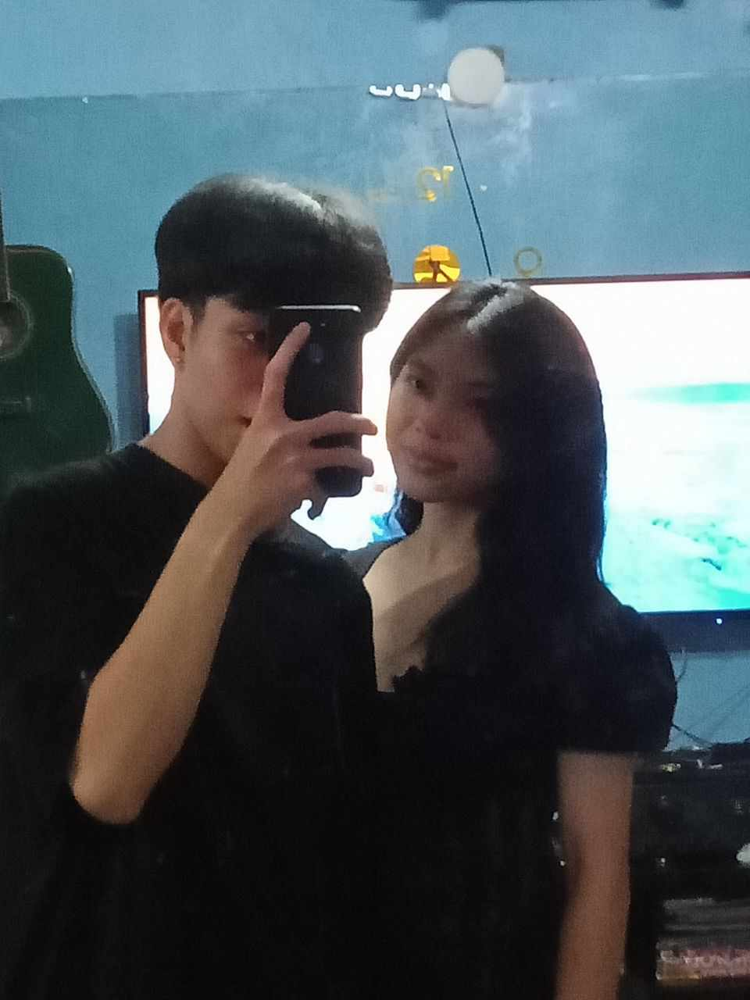

To My Laloveee!
Hi mahaal! another greetings for you kasi nagipit ang iyong boyfie hehe, pero di ako payag na wala akong gift kahit ganito lang at alam kong maappreciate mo 'to, Hi mahaaal! I know maraming beses ko na po to nasabi sayo pero gusto ko lang po ulit sabihin sayo na sobrang nag t-thankyou po ako sayo always sobrang sobra pong thankyou sa pag tanggap sa akin kung ano po ako, at sa lovee na always mo pong pinaparamdam sa akin, mahaal koooo, I know na hindi naging madali para sa atin at lalo na po sayo yung naging journey po natin until here, sobrang nag t-thankyou po ako for believing me always, sobrang gustong gusto ko po makabawi sayo and I know makakabawi po ako sayo mahal ko! loveee sobrang saya ng heart koo pag nakikita kita always kaya gustong-gusto kita makita eh, kung hawak ko lang ang lahat pipiliin ko ng magkatabi nalang tayo always. Love sobrang happy ng heart koo na nandyan ikaw, na meron akong maalagang gf, maganda, matalino, masipag, cute, lahat na sayo ih hays, thankyou marami lord binigyan mo ako ng ganitong gf. Thankyou mahal kasi even ako mismo na yung nakakapagod pinipili mo parin ako sobrang thankyou love kasi even na nakakasakit ako sayo ako parin pinipili mo. Thankyou for choosing me always mahaal, makakabawi at makakabawi rin po ako sayo lalovee and I know na magiging better po ako sayo. Ayaw na ayaw kitang mawala loveee, ikaw lang ang gusto ko hanggang sa maging okaay na ang lahat.Love happy monthsary pooo! im excited to make our my dreams come true gusto ko lang po na malaman mo na sobrang mahaal na mahaal kitaaa, at lahat ng ginagawa mo po mahaal ko ay sobrang na-appreciate ko sobrang na-amaze parin ako sayo dahil sobrang strong mo pong ate, gf, anak, student. Happy Monthsary Lovee! I hope this makes you happy again I know this is simple but all of this is nararamdaman ko. I lovee youu so so much laloveee mwa!
